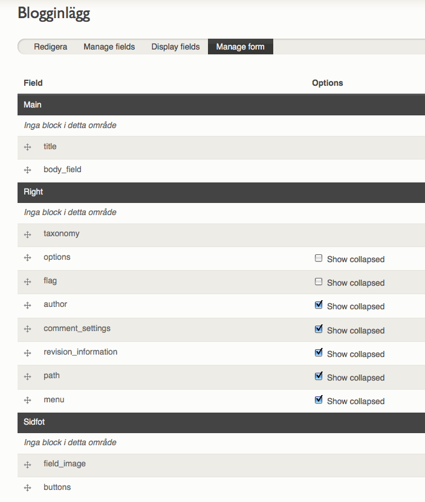
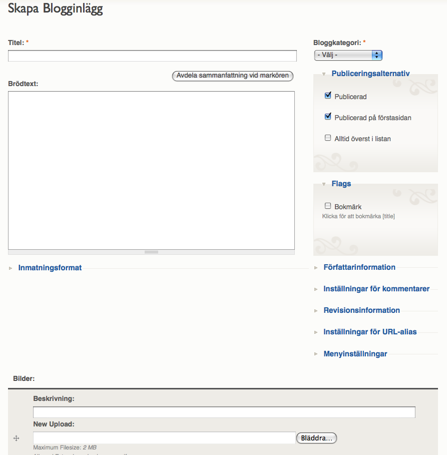

This module alleviates some of the problems with the mile-long node forms in Drupal. Other than that it gives you the possibility to use different weights and collapsed states for your forms than for your presentation.
A screenshot of the form administration for the content type. Re-weighting and moving between regions is done by drag and drop. Collapsing and expanding field sets is done by checkboxes.


GNU v.2
Hugo Wetterberg (hugo.wetterberg@gmail.com)
Hugo Wetterberg (hugo.wetterberg@gmail.com)
You can download this project in either zip or tar formats.
You can also clone the project with Git by running:
$ git clone git://github.com/hugowetterberg/nodeformcols